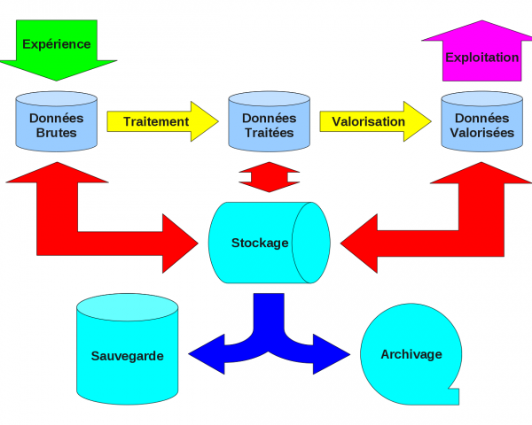

Stockage Informatique pour les laboratoires du site Monod¶
L’enquête est terminée. Le rapport pré-final a été remis à la direction de la recherche le 31 mars dernier. Merci à tous ceux qui se sont mobilisés pour cette étude. Dommage pour les autres…
Introduction¶
Fin 2009, la direction de la recherche a reçu de la part des laboratoires de biologie de l’établissement une demande de financement pour une infrastructure de stockage.
Dans ce cadre, j’ai été mandaté (par une lettre de mission de la direction de la recherche) pour effectuer une évaluation des besoins de stockage, de sauvegarde et d’archivage de tous les laboratoires de l’établissement, site Jacques Monod.
Démarche¶
Cette étude se déroulera en 6 étapes, avant la remise du rapport à la direction de la recherche fin mars (fin février sera marqué par la remise d’un rapport préliminaire sur les expressions de besoins des laboratoires) :
réalisation d’un questionnaire permettant d’établir un état des lieux de l’existant et des besoins associés (semaine 1) ;
expédition du questionnaire aux directeurs de laboratoire et invitation à rediffuser l’information aux personnels concernés (fin semaine 1)
analyse des retours de questionnaires (semaine 9)
consultation des directeurs, de leurs responsables d’activités et de leurs informaticiens pour un affinage (semaine 10);
synthèse des besoins, analyse et rédaction d’un cahier des charges (semaine 13) ;
proposition d’une infrastructure adaptée dans le rapport final (semaine 14).
Circuit des données numériques¶
Le questionnaire se focalise plus sur les processus que sur les données.
Quatre processus manipulent ces données à l’aide de plates-formes :
l’expérience : la « génération » des données, leur indexation, … ;
le traitement : leurs réduction, synthèse, analyse, indexation, …
la valorisation : leur transformation en contenu scientifique. Cela constitue le « coeur de métier » du chercheur ».
l’exploitation : leur diffusion sur tous les médias scientifiques
Ainsi, les données, à la source ou destination de ces processus sont finalement de 3 natures distinctes :
les données « brutes » : directement issues des expériences ;
les données « traitées » : premiers résultats ;
les données « valorisées » : résultats à destination des travaux de publication.
De plus, le schéma synoptique présente un entrepôt de ces données avec une triple nature :
le stockage : accès direct aux données
la sauvegarde : duplication complète/partielle, synchrone/asynchrone de l’espace de stockage dans un endroit apportant une sûreté aux données en cas de perte du stockage
l”archivage : état du stockage complet ou partiel, à un instant dans le passé. Ces états sont d’une fréquence et d’une pérennité à définir
Pour qu’aucune information importante n’échappe à l’étude préliminaire a été choisi la collecte basée sur une démarche analytique classique. Elle propose de répondre aux sept questions élémentaires Pourquoi ? Quoi ? Qui ? Quand ? Où ? Combien ? Comment ?
Les questionnaires¶
L’échéance proche de fin février impose de limiter les questionnaires aux plates-formes expérimentales et à celles réalisant les traitements
Questionnaires en ligne¶
Sondages, ancienne version, disponibles uniquement dans l’ENS :
- Plates-formes expérimentales , prioritaire
- Plates-formes de traitement , prioritaire
- Exploitation des résultats de la recherche , prioritaire
Sondages, nouvelle version, disponibles de partout :
Plates-formes expérimentales, prioritaire
Plates-formes de traitement, prioritaire
Exploitation des résultats de la recherche, secondaire
La « valorisation » : si son importance est capitale, les contraintes techniques associées à leur gestion (volume de données, débit nécessaire, contrôle d’accès, etc…) sont moins importantes que pour les 3 autres processus. Elle sera donc étudiée au besoin ultérieurement
Résultats¶
Document préliminaire : remis le 26 février 2010 à la direction de la recherche
Document final v1 : issu du rapport remis le 31 mars 2010 à la direction de la recherche, corrigé de quelques coquilles
Document final v2 : issu du rapport remis le 7 juin 2010 à la direction de la recherche, modifié suite aux ajustements du LBMC.
Tous ces documents, textes et schémas exigent l’accord préalable de l’auteur pour leur exploitation dans une quelconque autre étude.
Comment remplir les questionnaires¶
Informations pratiques
les questionnaires ci-dessus sont accessibles par défaut de l’intérieur de l’ENS. Pour pouvoir les y accéder, il suffit :
toute personne de l’ENS après authentification avec leur identifiant/mot de passe ENS ;
une personne en charge de plusieurs plates-formes doit remplir autant de questionnaires que de plates-formes.